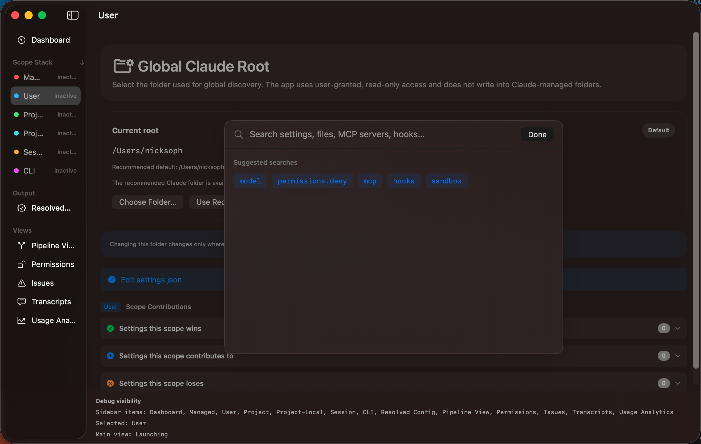

Global Search lets you quickly find anything in your configuration. Press ⌘F from anywhere in the app to open the search overlay.

The search overlay appears as a modal window (580 × 400 pixels). Start typing to filter results. When the search field is empty, suggested searches are shown to help you get started.
Results include type badges so you can tell whether a match is a setting, file, server, or hook. Click a result to navigate directly to its location in the app. Press Esc to dismiss.
preferredModel, defaultModel, and any MCP server
with "model" in its name.